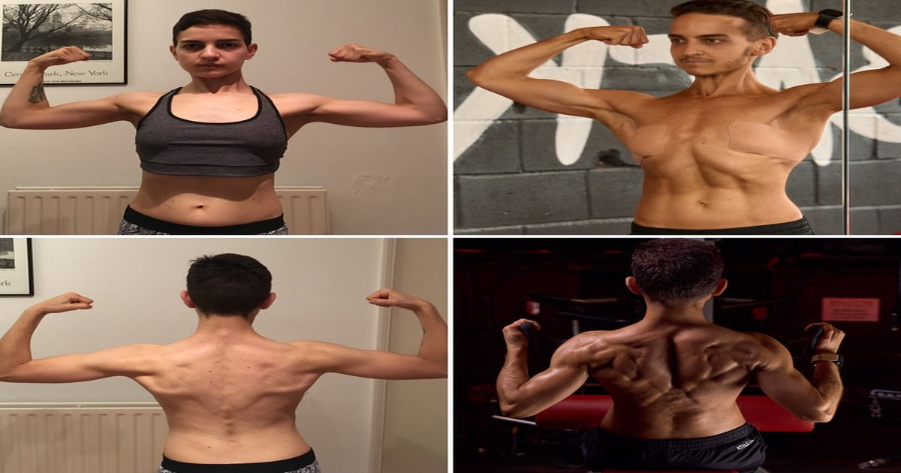

The mirror doesn't lie. But the scale does. I had a client named Jenna who was four weeks into her cut. She was eating 1,600 calories a day. Training five times a week. Doing her cardio. The scale was dropping – two pounds a week, perfect rate. But she looked in the mirror and saw her arms getting smaller. Not more defined. Smaller. Her strength was dropping too. Bench press down ten pounds. Squat down fifteen. She was losing muscle. The Protein Intake Calculator showed her the problem immediately.Protein Intake Calculator
Enter your weight, activity level, and goal — get your daily protein target in grams per pound and grams per kilogram.
All data stays in your browser — we never see it.
Macro Split Planner
Enter your calorie target and protein percentage — get a daily macro split with meal-by-meal recommendations.
All data stays in your browser — we never see it.
Meal Protein Tracker
Log your daily meals and see protein per meal — get instant feedback on your distribution.
All data stays in your browser — we never see it.
Protein Source Comparator
Compare cost per gram, leucine content, PDCAAS score, and digestibility across protein sources.
All data stays in your browser — we never see it.